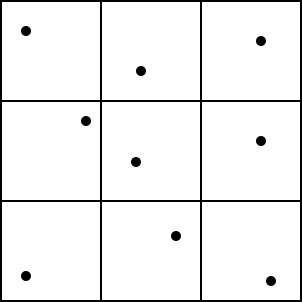
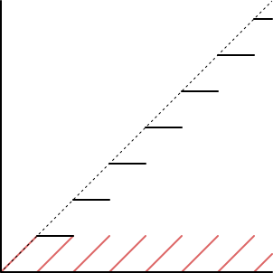

The result of what's discussed in this article can be seen here. I'm also using my noise function in this article, check here for an explanation of how that works.
I wanted to place the raindrops evenly over the canvas, and for the density to remain the same regardless of the shape of the canvas. So, a simple for loop like this wouldn't work:
float distance = rainSDF(vec2(noise(vec3(0.)), noise(vec3(0., 0., 1.))));
for (float i = 1.; i < RAINDROP_COUNT; i += 1.)
{
distance = min(distance, rainSDF(vec2(noise(vec3(i, 0., 0.)), noise(vec3(i, 0., 1.)))));
}
Because the number of raindrops is constant, shrinking the size of the canvas will increase the density. We would also be checking the distance for every raindrop at every pixel, for large numbers of drops this gets very expensive.
Instead, we can use unaligned grid sampling. This works by dividing the canvas into a grid, and randomly placing a single raindrop in each grid square.

Now we just need to know what grid square our pixel is in and test against the raindrop for that grid, along with the 8 surrounding grid squares since the raindrops will probably expand past the square edge. Now each pixel is only doing 9 distance calculations, no matter how many raindrops there are.
Determining the region is simple enough:
vec2 region = floor(vScreenPos/REGION_SIZE);
The distance calculation now looks like this:
float rainSDF(vec2 region, vec2 pos)
{
vec2 origin = vec2(noise(vec3(region, 0.)), noise(vec3(region, 1.))) * REGION_SIZE;
return length(pos - region * REGION_SIZE - origin);
}
This ugly block gets the distance for all of the grid squares we are interested in:
float dist = rainSDF(region, vScreenPos); dist = min(dist, rainSDF(region + vec2(1., 0.), vScreenPos)); dist = min(dist, rainSDF(region + vec2(-1., 0.), vScreenPos)); dist = min(dist, rainSDF(region + vec2(0., 1.), vScreenPos)); dist = min(dist, rainSDF(region + vec2(0., -1.), vScreenPos)); dist = min(dist, rainSDF(region + vec2(1., 1.), vScreenPos)); dist = min(dist, rainSDF(region + vec2(1., -1.), vScreenPos)); dist = min(dist, rainSDF(region + vec2(-1., 1.), vScreenPos)); dist = min(dist, rainSDF(region + vec2(-1., -1.), vScreenPos));
We don't want the raindrops to be static. We will use the floor and fractional parts of the time variable to control the location and size of the raindrops respectively. The outputs of the floor and fract functions look like this:

The dotted line is time, the solid black line is the output of the floor function, and the solid red line is the output of the fract function. Using both of these functions, the raindrop will change location at the same time its radius returns to zero.
First, we move the raindrop around:
float rainSDF(vec2 region, vec2 pos)
{
float timeFloor = floor(time);
vec2 origin = vec2(noise(vec3(region, timeFloor)), noise(vec3(region, timeFloor + 1.))) * REGION_SIZE;
return length(pos - region * REGION_SIZE - origin);
}
Next, we make the raindrop grow over time, and then return to a single point:
float rainSDF(vec2 region, vec2 pos)
{
float timeFloor = floor(time);
float timeFract = fract(time);
float radius = (REGION_SIZE / 2.) * timeFract;
vec2 origin = vec2(noise(vec3(region, timeFloor)), noise(vec3(region, timeFloor + 1.))) * REGION_SIZE;
return length(pos - region * REGION_SIZE - origin) - radius;
}
Finally, we don't want the raindrops to all change position and grow at the same time, so we offset the time variable based on the grid square we're in:
float rainSDF(vec2 region, vec2 pos)
{
float timeOffset = time + noise(vec3(region, 0.));
float timeFloor = floor(timeOffset);
float timeFract = fract(timeOffset);
float radius = (REGION_SIZE / 2.) * timeFract;
vec2 origin = vec2(noise(vec3(region, timeFloor)), noise(vec3(region, timeFloor + 1.))) * REGION_SIZE;
return length(pos - region * REGION_SIZE - origin) - radius;
}
One downside to this technique is it limits the density we can achieve. To get a lower density, we can increase the size of the grid squares while shrinking the size of the raindrop radius. If we want to increase the density, we can shrink the size of the grid squares and increase the radius of the drops, but only to a certain point. If the radius would extend beyond the 8 neighbouring grid squares, then the distance function will break. We would need to increase the number of squares we check to compensate for this, but that significantly increases the work the GPU will need to do for every pixel.
On the bright side, so long as we don't exceed the density limit, increasing or decreasing the density has no effect on the computing cost of the shader.